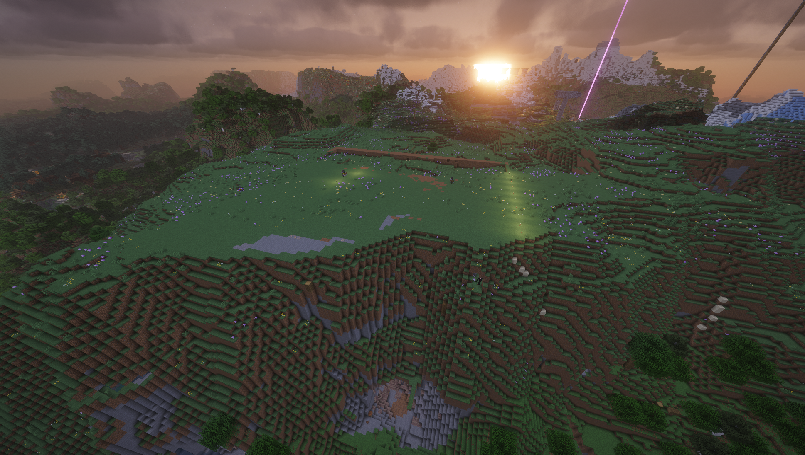
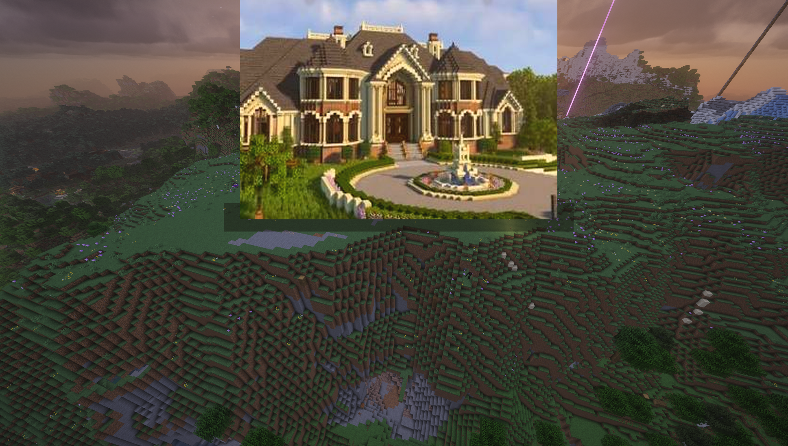
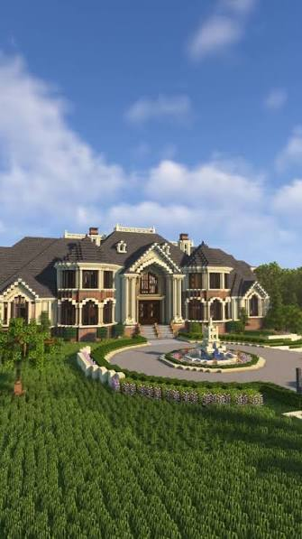
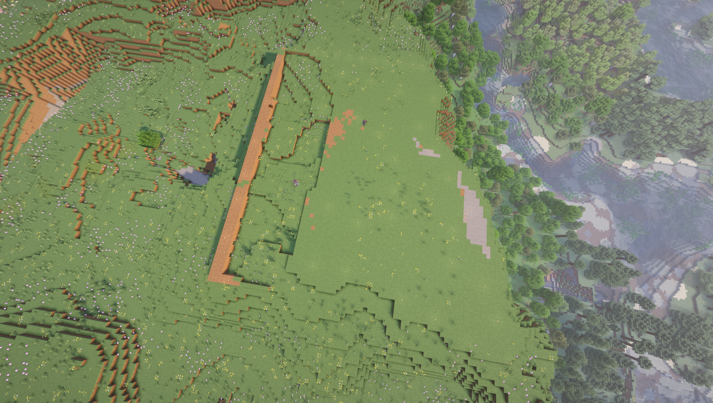

X: -662 | Y: 126 | Z: 790
🌱 Seed: -4815224116428668341
📐 Grundfläche: 70 × 50 Blöcke (Höhe: 46 Blöcke)
☀️ Ausrichtung: Süd-Westen (Blick in Sonnenuntergang)
Schritt-für-Schritt Bauanleitung
...
Meilensteine dieser Schicht:
Blöcke auf dieser Schicht
Klick = Im Bauplan hervorheben← / → (oder A / D) wechseln Schichten.
Mausrad zoomt. Im 3D-Modus dreht R die Kamera. Klick auf einen Block kopiert Koordinaten.
Gesamt-Materialbedarf & Shulkerkisten-Packplan
Exakt kalkuliert für das 70 × 50 Bergkamm-Herrenhaus inklusive aller 3 Kellergewölbe und des Infinity-Pools.
🎒 Empfohlene Shulkerkisten-Zusammenstellung für den Berg
Packe diese Kisten in deiner Hauptbasis und transportiere sie auf den Bergkamm (Seed: -4815224116428668341, X: -662 Y: 126 Z: 790):
Raum-Atlas & Etagenpläne
Detaillierter Rundgang durch alle 9 Hauptbereiche des Anwesens – von der 60m-Klippen-Lounge bis zum Dachfirst.
Redstone-Automationen & Teleporter-Blaupausen
Erprobte, 100% zuverlässige Schaltungen für den Survival-Server-Einsatz in Minecraft 1.20 / 1.21+.
Server-Bauphasen & Fortschritts-Checkliste
Strukturierter 7-Stufen-Bauablauf. Markiere erledigte Arbeitsschritte – Fortschritt wird lokal gespeichert.
Welt- & Bauplatz-Dossier (Seed: -4815224116428668341)
Interaktiver Vergleich zwischen dem unbebauten Bergplateau mit dem ausgehobenen Aushubgraben und dem fertig gerenderten 70-Block Mega-Herrenhaus bei Sonnenuntergang.


🏔️ Geografische Eckdaten
- Minecraft Version: 26.2 (kompatibel mit 1.20+ / 1.21+)
- Seed:
-4815224116428668341 - Plateau-Mittelpunkt:
X: -662 | Y: 126 | Z: 790 - Biom: Stony Peaks / Jagged Peaks (Gipfel & Felswände)
- Pinkes Leuchtfeuer (Beacon):
X: -657 | Y: 126 | Z: 780
☀️ Himmelsrichtungen & Licht
- Vorderseite (Portikus): Süd-Westen (schaut direkt in die Abendsonne)
- Rückseite (Infinity-Pool): Nord-Osten (60-Block Klippenabfall zum Tal)
- Westflügel (Salon & Bibliothek): Nord-Westen (Berggrat)
- Ostflügel (Speisesaal & Küche): Süd-Osten (Alpines Plateau)
🏗️ Gelände-Integration
- Aushubgraben: Stimmt exakt mit den 70 × 50 Blöcken des Bauplans überein
- Keller 3 Klippenbalkon: Hängt frei auf Y=106 über der Schlucht
- Wasserabwurf-Schacht: Notausgang aus Keller 3 direkt in den Bergsee im Tal
- Vorplatz: Ausreichend Raum für Kutschen-Kreisverkehr und Hecken
Foto-Referenzen & Architektur-Vorlage
Vergleich zwischen der Viktorianischen Ziegel-Villa Vorlage (images.png) und den Server-Geländefotos.
🏛️ Viktorianische Architektur-Vorlage (images.png)

⛰️ Server-Baufeld & Aushub (image3.png)
